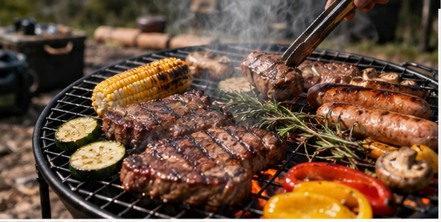

SOTOJITAKU CAMP / BEGINNER GUIDE
BBQは、
焼く前の準備で決まる。
火を起こす道具だけでなく、保冷・衛生・片付けまで一つのセットとして考えます。
キャンプのBBQは楽しい一方、食材の保冷、火の準備、生肉を扱う器具、片付けまでやることが多い体験です。初回は品数を増やしすぎず、扱いやすいメニューにして、夕方の時間に余白を残すとキャンプ全体を楽しみやすくなります。
01 熱源と調理器具をセットで確認
BBQグリルや焚き火台で調理する場合は、その製品が調理に対応しているか、必要な網や燃料が何かを確認します。バーナーを使うなら対応燃料と器具の安定性を確認します。キャンプ場によって直火禁止などルールが異なります。
テント内や換気の悪い場所で火器を使わず、火器メーカーとキャンプ場のルールに従ってください。
02 保冷と生肉の扱いを軽視しない
肉や魚など要冷蔵食材は、移動から調理直前まで冷たく保てるようにします。生肉用のトングや箸を食べるときに共用しない、手洗いをする、十分に加熱するなど基本の衛生対策も必要です。
クーラーボックスは人数と滞在時間に合う容量を確認し、保冷剤を含めた実際の収納量を考えます。
03 夕食をイベント化しすぎない
到着後にテント設営、そのあとBBQの下準備、さらに焚き火まで続けると、初回は作業が途切れません。野菜を切って持参する、下味をつけておく、洗い物の少ない料理にするなど、家で準備できる部分を前倒しします。
BBQが主役なら、他の料理を簡単にするだけでも余裕が生まれます。
出発前のチェック
- グリル・焚き火台等の熱源
- 対応する燃料
- 網・鉄板など必要器具
- 火ばさみ・耐熱用品
- クーラーボックス・保冷剤
- 生肉用と食事用の器具を分ける
- ゴミ袋・片付け用品
- キャンプ場の火気ルール
焚き火とBBQは同じではない焚き火台が調理に使えるか、網が付属するかは製品ごとに異なります。商品本体と付属品、キャンプ場ルールを確認して計画してください。
次に読む
MAKE YOUR CAMP
条件を選ぶと、必要なものが変わります。
7つの質問から、持ち物・買う/借りる・ごはん・予算・1日の流れまで、あなたのキャンプとして組み立てます。
SOTOJITAKU CAMPでつくる →